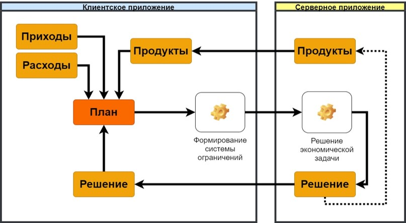

Теоретические основы проектирования и разработки мобильного приложения для модуля работы с клиентами банка
ВВЕДЕНИЕ
Современная практика ведения бизнеса на российском рынке банковских услуг показывает, что получение прибыли зависит от степени удовлетворенности клиентов качеством обслуживания и предлагаемыми услугами, от лояльности клиентов.
Ориентируясь на удовлетворение потребностей частных и корпоративных клиентов, находясь в условиях конкуренции банки, совершенствуют качество предоставления традиционных услуг и разрабатывают новые банковские услуги, отвечающие требованиям современного технического развития.
Актуальность темы исследования обусловлена важным социально-экономическим значением розничных услуг для банковской системы и общества, необходимостью совершенствования деятельности банков в сфере розничных услуг и необходимости разработки специальных предложений и развития технологий обслуживания клиентов.
Объектом исследования является являются мобильные системы как коммерческие информационные продукты для анализа клиентской базы банка.
Предметом исследования являются концепции и принципы проектирования мобильного приложения для решения задач по управлению продуктовой линейкой банка.
Целью работы является изучение проблем, препятствующих наиболее полному учету планов и интересов клиента, при банковском обслуживании посредством банковских продуктов и предложение решения исследуемой проблемы.
Задачи исследования:
- Изучить работу коммерческого банка с клиентами посредством банковского продукта
- Исследовать проблемы анализа клиентской базы при «продуктовом подходе»
- Изучить теоретические основы разработки мобильных приложений для банка
- Проанализировать методы разработки информационных систем
- Рассмотреть информационное обеспечение модуля информационной системы для мобильного приложения
- Рассмотреть программное обеспечение модуля информационной системы для мобильного приложения
- Рассмотреть технологическое обеспечение модуля информационной системы для мобильного приложения
«Продуктовый подход»
В настоящее время в банках реализован так называемый «продуктовый подход». В данном подходе результатом банковской деятельности является банковский продукт. При этом потребителями результатов банковской деятельности выступают – банк, клиент и общество – и не по очередности, как это происходит в других сферах, а зачастую одновременно. Банковский продукт — это инновация банка, которая разрабатывается специально для решения задач конкретного типа клиента. Банковским продуктом является пакет финансовых услуг, финансовых инструментов и финансовых технологий, которые связаны между собой.
Управление продуктовой линейкой банка
Одним из элементов управления продуктовой линейкой является совершенствование банковских услуг, выведение на рынок новых и снятие старых продуктов. Это осуществляется посредством анализа предыдущих продуктов банка, анализом продуктов банков конкурентов и анализом предыдущей кредитной и депозитной истории клиентов. Состояние дел с продуктовыми линейками банков на сегодняшний день характеризуется отсутствием реальной сегментации, нацеленности на конкретного потребителя и отсутствием достоверной и доступной информации о сокровенных мечтах и планах клиентов.
Развитие продуктовой линейки банка
В случае реализации, такой анализ предоставит конкурентное преимущество при составлении стратегического плана развития банка и его продуктовой линейки для максимальной востребованности продуктов и повышения конкурентоспособности банка. Объектами обычного маркетологического анализа являются слухи, оценки и социально-психологические характеристики клиентов, но факты и цифры, нужные для нашего анализа, можно получить только при подробном опросе клиентов, что нецелесообразно проводить привычными способами. Проанализировать финансовое положение большого количества клиентов, с возможным моделированием нескольких различных вариантов развития событий в жизни клиента, без их постоянного личного вклада в этот процесс не представляется возможным. Финансовые планы клиента необходимо получать с помощью оказания помощи в анализе и обработке текущего положения клиента, его планов и существующих банковских продуктов, чтобы предоставить ему предложения по улучшению его финансового положения.
Информационное обеспечение
Модуль продвижения продуктовой линейки банка - совокупность программных и технических средств, представляющих собой клиентскую и серверную машину.
На клиентской машине будет реализовано клиентское приложение. Приложение будет взаимодействовать с базой данных и серверным приложением.
База данных представляет собой записи клиента о его приходах, расходах, используемых банковских продуктах, сформированных планов и решений по планам. Такая реализация была выбрана, чтобы обеспечить бесперебойную доступность к данным, которые вводит клиент. Логическую ER-модель базы данных клиентского приложения можно увидеть на рисунке
Способ нахождения решения
На сервере выполняется решение экономической задачи. Основой для решения экономических задач являются математические модели. Математической моделью задачи называется совокупность математических соотношений, описывающих суть задачи. Составление математической модели включает:
• выбор переменных задачи
• составление системы ограничений
• выбор целевой функции
Переменными задачи называются величины Х1, Х2, Хn, которые полностью характеризуют экономический процесс. Обычно их записывают в виде вектора: X = (X1, X2, ..., Xn).
Системой ограничений задачи называют совокупность уравнений и неравенств, описывающих ограниченность ресурсов в рассматриваемой задаче.
Целевой функцией задачи называют функцию переменных задачи, которая характеризует качество выполнения задачи и экстремум которой требуется найти.
Общий случай записи задачи линейного программирования представлен на рисунке 9. Данная запись означает следующее: найти экстремум целевой функции (1) и соответствующие ему переменные X=(X1, X2,...,Xn) при условии, что эти переменные удовлетворяют системе ограничений (2) и условиям неотрицательности (3).
Системная архитектура
После изучения теоретических основ разработки мобильных приложений, нами было определенно, что архитектура готового решения должна быть представлена в виде архитектуры «клиент-сервер».
В процессе работы программы будут взаимодействовать клиентская и серверная машина. Взаимодействие машин можно увидеть на рисунке
Клиентская машина – телефон, используется в процессе работы для наполнения параметрами базы данных, передачи этих параметров серверной машине, получению обработанных параметров от серверной машины и их визуализация для пользователя.
Операционная система клиентской машины – Android 7.0 и выше. Разные версии в ряде моментов имеют отличную друг от друга логику работы. Например, до версии 6.0 приложения не должны были запрашивать каждое разрешение отдельно, они указывались списком в Google Play и, подразумевалось, что пользователь соглашается с ними до момента загрузки. Начиная с 6.0 каждое разрешение должно быть запрошено отдельно в момент работы приложения. Причиной выбора не 6.0, а 7.0 является то, что Android 7.0 Nougat представила JIT-компилятор (англ. Just-in-Time, компиляция «точно в нужное время») со сбором характеристик работы программы для ART (Android Runtime — среда выполнения Android-приложений), который позволяет постоянно повышать производительность приложений Android при их запуске. Компилятор JIT дополняет нынешний компилятор Ahead of Time от ART и помогает улучшить производительность во время выполнения. Чтобы не реализовывать оба варианта логики и использовать более совершенную среду выполнения приложения, было решено выбрать минимально допустимую ОС - Android 7.0, среда выполнения - Android Runtime.
Серверная машина – выделенный или специализированный компьютер для выполнения сервисного программного обеспечения, используется для обработки данных, полученных от клиента, сохранение полученных результатов в свою базу данных и отправка их клиентской машине, отправка клиентской машине данных о банковских продуктах.
Операционная система серверной машины – Ubuntu. Ubuntu Server – бесплатная ОС на базе ядра Linux, отличается быстрой и удобной установкой нужного функционала и использованием самых новых ядер Linux среди серверных операционных систем.
Среда выполнения серверного приложения – JRE, так как серверное приложение будет написано на языке Java.
Соединение между клиентским и серверным приложениями будет обеспечиваться посредством HTTP (HyperText Transfer Protocol, «протокол передачи гипертекста»). В соответствии со спецификацией OSI, HTTP является протоколом прикладного (верхнего, 7-го) уровня. Актуальная на данный момент версия протокола, HTTP 1.1, описана в спецификации RFC 2616.
Заключение
В ходе выполнения курсовой работы было проведено изучение проблем, препятствующих наиболее полному учету планов и интересов клиента, при банковском обслуживании посредством банковских продуктов, и было предложено решение исследуемой проблемы.
В первой главе курсовой работы были изучены процессы работы с клиентами коммерческого банка. Рассмотрен «продуктовый подход» при работе с клиентами банка. Были проанализированы недостатки в управлении продуктовой линейкой банка, были предложены новые способы и методы его развития. Опираясь на изложенные требования к предложенному решению, были изучены основы разработки мобильного приложения для банка. Исходя из требований к защите информации и персональных данных в банковских информационных системах были сформированы требования к разрабатываемому приложению. Вместе с этим, изучены современные методики и программные средства для моделирования информационных систем мобильных приложений.
Во второй главе курсовой работы были смоделированы процессы и методология работы серверной и клиентской машины для разрабатываемого модуля продвижения продуктовой линейки банка. Были сформированы инфологические и даталогические модели данных для «клиента» и «сервера». Опираясь на сформированные модели, были изучены программные и аппаратные средства для использования в разрабатываемом приложении. Также было изучено программно-аппаратное взаимодействие и была смоделирована архитектура приложения. Были определены программные продукты, протоколы, фреймворки, и операционные системы, подходящие для разработки описанного решения исследуемой проблемы.
Таким образом, все цели курсовой работы были выполнены.